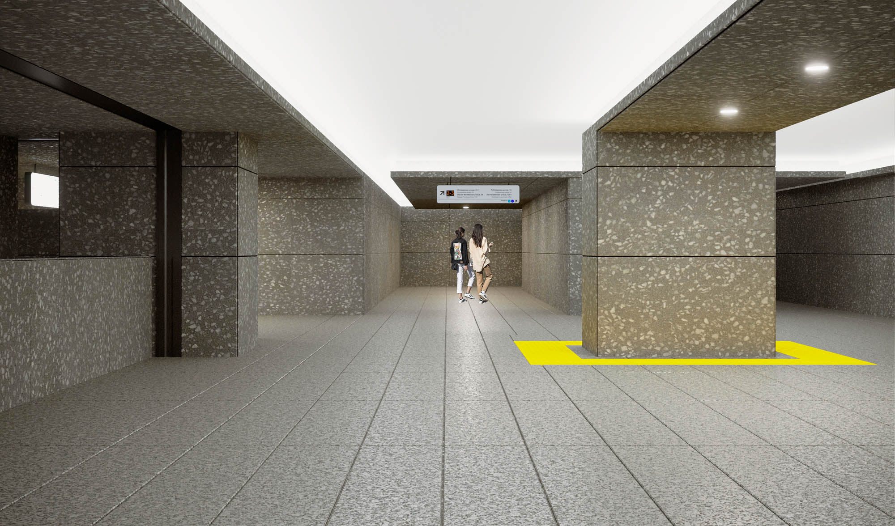

Design of the architectural appearance of the Kuntsevskaya station of the Bolshaya ring line of the Moscow metro
The main idea of the architectural and artistic solution is monumentality, unity and integrity of the volumetric interior of the station and pavilions as if carved out of solid stone
All surfaces - floors, walls and ceilings - imitate the antique terrazzo mosaic technology in a light grey shade. Glossy white panels are also used on the ceiling, similar to rock openings. The geometry and right angles of the station are levelled by large cylindrical lamps that add grandeur temperament to the interior of the station

The main illumination of the platform and pavilions is made using surface-mounted cylindrical lamps with diffused light, finished with brushed aluminium panels with a terrazzo photo pattern similar to that on the ceiling. The transition zones are marked with an increase in the ceiling with linear lighting behind the cornice along the perimeter. Overhead spotlights are used in fire and lift zones. The amount of light is determined according to the lighting calculation